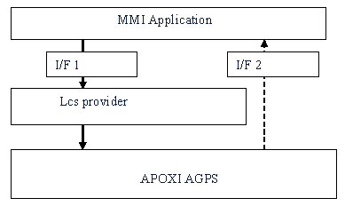
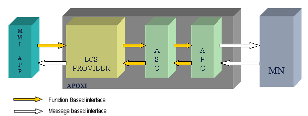

LCS Overview
1 Introduction
AGPS is a concept used for Global Positioning Systems which can provide accurate measurements of the position even when used indoors. The entire AGPS functionality is implemented as an additional plug and play module called "LCS" (LoCation Service) in APOXI. Applications using the AGPS feature can be developed over APOXI using the interfaces provided.
2 Modes of operation
There are three modes/protocols of operations supported currently in APOXI. they are listed in the following:
The implementation of these protocols can be included/excluded by switching on/off compile time flags.
If supported in a release, these protocols can be loaded/unloaded at run time using Lcs Settings (See Section 18.5). But stand alone mode is supported by default if it is a part of the deliverable and can not be loaded/unloaded. LcsProvider selects one of the loaded protocols/modes for position fixes based upon the parameters passed in interface invocations.
3 Interfaces
The interfaces between LCS and MMI application are shown in Figure 1.
 |
Figure 1. Interfaces between LCS and MMI application
I/F 1 is a function based interface and I/F 2 is message based interface.
3.1 Implementation
I/F 1 is a functional interface because this invocation is done by the MMI application and is predictable.
I/F 2 is asynchronous interface because these are the responses received from the network and are unpredictable. Also, in the latter case, MMI may want to wait for user inputs which may in turn block the execution of the thread.
The LcsProvider provides interfaces to the actual LCS functionality.
3.1.1 I/F 1
I/F 1 interfaces provided by Lcs are listed in the following:
3.1.2 I/F 2
I/F 2 interfaces provided by Lcs are listed in the following:
4 Lcs Implementation Details
4.1 SDL Signal Definition
All the SDL signals needed for Lcs are added to msap_signals_mn.pr file and a tool is used to generate the ms.h file.
4.2 Control Flow
The following diagram (Figure 2) depicts a typical control flow within MMI. The interfaces and the messages exchanged between the various blocks (MN, APC, etc).
 |
Figure 2. AGPS Message Flow in MMI
4.2.1 MN Interface à APC
APC maintains a mapping between the incoming SDL signals and the corresponding processing functions in protocol specific SignalMapTableNode classes. The processing function extracts the parameters from the SDL signal and posts appropriate argument messages to the dispatcher. When a protocol is loaded/unloaded, these tables also get loaded/unloaded.
4.2.2 APC Interface à ASC
The SDL signal processing methods in APC posts appropriate argument messages to the dispatcher. The dispatcher implementation is actually a part of Lcs implementation. The processing method processes the argument message and takes appropriate action.
4.2.3 Lcs Interface à MMI App
The ASC message processing method in Lcs takes out relevant parameters of the argument object (embedded in the received message) and copies to the corresponding message to be sent to the MMI application. So again, a new MMI message is sent to the Lcs application.
4.2.4 MMI App à Lcs and Lcs à APC Interfaces
MMI application invokes the appropriate method of LcsProvider for any Lcs-related functionality. Lcs, in turn, processes the parameters and passes them to the corresponding method of the protocol specific message processor class in APC. When a protocol is loaded/unloaded, this class object also gets l oaded/unloaded.
4.2.5 MN Interfaces ß APC
The processing functions in APC constructs the appropriate SDL signal using the parameters passed and sends it to the SDL environment.
5 Lcs Settings
A settings application is also provided with the Lcs implementation. This application takes care of the following: